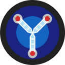

I earned a Bachelor's Degree in Information Technology at The University of Central Florida in May, 2016. Shortly after I enrolled in UCF's Coding Bootcamp. The bootcamp was one of the most intense and humbling experiences of my life. In it, I gained a vast amount of knowledge in Web Development and coding in general. After graduating from the bootcamp, I realized that not only do I enjoy coding with an endless passion, but I would like to keep learning more so that I can help others with learning it as well.

Whenever I'm not busy coding or working, I enjoy going to the beach, reading, playing video games, watching sports and exploring new places to visit in Orlando. If you have any questions or would like to speak, please don't hesistate to contact me!